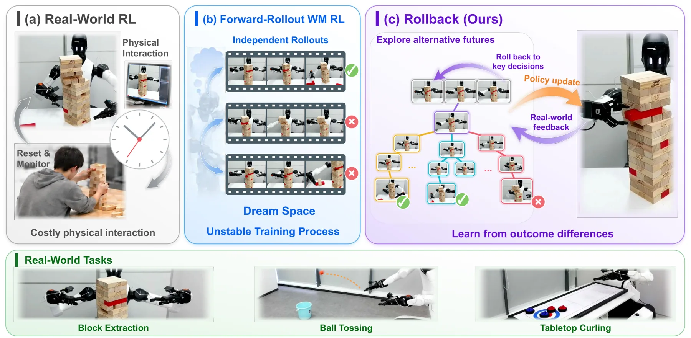
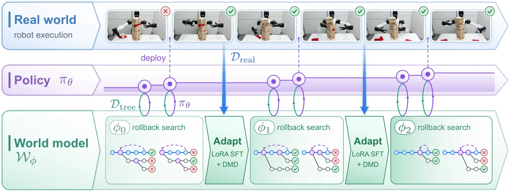
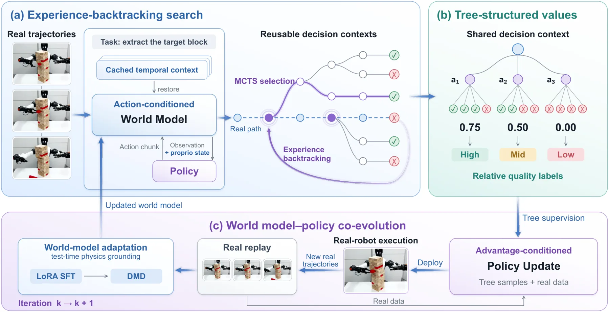
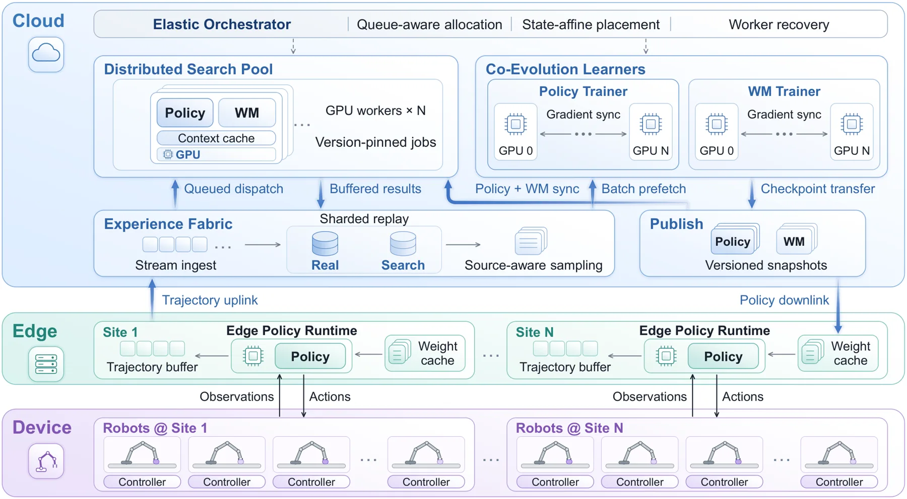
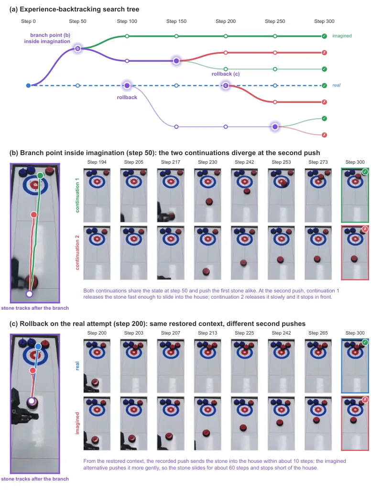
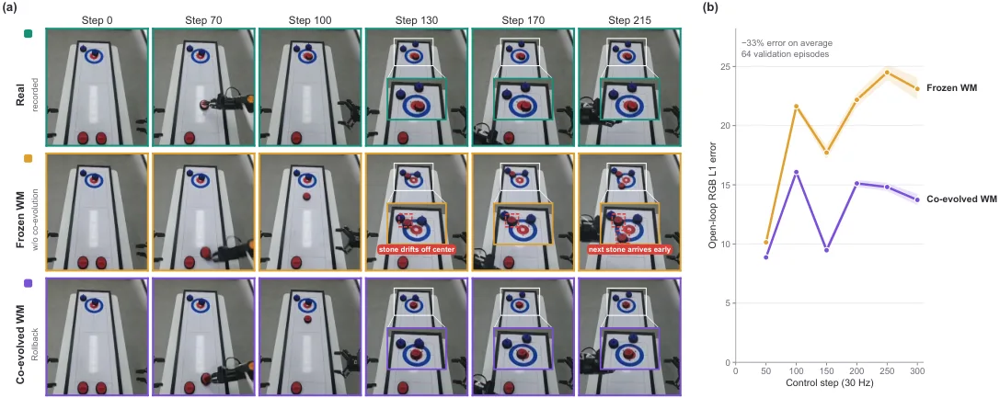

Rollback：在世界模型里回溯经验，用于策略改进
Rollback: Experience Backtracking in World Models for Policy Improvement
用「可回卷的世界模型 + MCTS 分叉 + 子树结果当相对价值」替代前向 rollout 与独立价值网络：块抽取 69.33%、抛球 40.00%、桌面冰壶 64.44%，平均 57.93% 比 RISE 同世界模型高 11.21 个百分点；冻结世界模型或改用单条 rollout 奖励，成功率分别掉到 64.67% 与 59.33%。
block extraction SR
ball tossing SR
average gain over RISE
consecutive extractions
作者、单位与技术谱系 · Research context
作者与单位
研究脉络
- RISE（2025，世界模型内策略改进 + 学习式进度价值）直接对照关系：同样用世界模型做策略改进，但走前向 rollout 并依赖学习到的价值模型；本文在同一个 GE-Sim 2.0 上复现它，作为「只差回溯搜索」的对照。[论文 §2 与 §6.1]
- RECAP（2025，优势条件训练）方法基座关系：提供「把优势离散成档位、写进策略提示、用条件流匹配训练」的配方；本文把档位来源从学习式价值模型换成树结构相对价值。[论文 §4.2 与 §6.1]
- AlphaGo / Expert Iteration / Sampled MuZero搜索范式来源关系：提供「策略提议—搜索评估—蒸馏回策略」的循环与连续动作空间下的采样式 MCTS；本文把这套范式搬进学习到的视频世界模型。[论文 §2 与 §4]
合作网络
- AgiBot ↔ BUAA ↔ NUS（三单位共同署名）AgiBot → Beihang University / National University of Singapore关系：共同署名（同一论文，三个单位）[论文首页单位编号]
- Rollback → GE-Sim 2.0 与 π0.5（明确技术依赖）Rollback → GE-Sim 2.0 world model / π0.5 policy关系：明确技术依赖（世界模型与策略基座）[论文 §4.1 与 §4.2]
- Liliang Chen（项目负责人）↔ Guanghui Ren / Jianxin Li（通讯）Liliang Chen → Guanghui Ren；Jianxin Li关系：同一项目的角色分工（项目负责人 / 通讯作者）[论文首页脚注]
作者角色（共同一作、项目负责人、通讯）均来自首页脚注标记；机构合作依据单位编号与作者隶属。世界模型、策略基座与搜索范式的来源依据 §2、§4、§6.1 的显式表述，不含对内部组织关系的推断。
方法本质拆解 · What actually changed
是不是微调？
策略与世界模型都在训练，但角色不同。策略以 π0.5 初始化后做优势条件流匹配训练，权重全量更新；世界模型（GE-Sim 2.0）在任务数据上先微调，训练过程中再用 LoRA SFT + DMD 持续吸收新真机轨迹，属于轻量增量适配而非全量重训。整个流程没有任何「冻结推理」的环节，部署阶段则完全不训练、也不搜索。
有没有额外约束？
搜索侧有三条硬约束：动作块必须从缓存上下文恢复后才能分叉（保证前缀共享）、progressive widening 限制每节点子动作数、兄弟子树价值档不同时强制补足 n_conf 次访问以降低标签噪声。训练侧用 K 档离散优势替代连续价值，并在提示里编码档位；成功真机轨迹固定最高档、失败固定最低档。世界模型侧用 LoRA 限制每次更新的参数量，保证可以反复迭代而不重训全模型。
推理/后端到底做了什么？
部署时只跑策略网络：观测与指令进 π0.5，按最高档条件加 CFG 生成动作块，直接下发执行；不调用世界模型、不做树搜索、不做测试时优化。所有搜索与蒸馏都发生在训练侧，因此推理成本与普通 VLA 相同。这也是作者强调「benefits transfer to physical execution without requiring world-model search at deployment」的含义。
方法本质是什么？
本质是把「世界模型可回卷」转成一种信用分配机制：同一前缀下的兄弟动作共享除动作本身以外的所有条件，因此其结果差异可以归因到该动作，而不需要学习一个从中间状态预测成功的价值函数。它改变的不确定性是「哪一步决策真正决定了成败」，并用子树经验成功率把这个量估计出来。它没有做的是提供任何保证——世界模型的偏差仍可能被搜索利用，作者只能用真机数据持续校准来缓解。
输入真机轨迹与离线示范；在世界模型缓存上下文上回卷分叉、用 MCTS 分配想象预算、以子树成功率构造组内相对标签；蒸馏进 π0.5 的策略并以 LoRA 持续校准世界模型；直接效果是真机成功率相对同世界模型的 RISE 高 11.21 个百分点。

桥接价值Bridge
桥接价值
Rollback 把「世界模型可以倒回」这件事从工程细节提升为训练原语：既然上下文 m_t 是显式数据结构，就能缓存、恢复、从同一决策点分叉多个动作，于是「反事实对比」不再需要真实环境重置。这与我们做多假设状态估计的直觉同源——同一段历史前缀下比较不同假设的后果，比从头重跑更省算力、也更容易做信用分配。它的桥接价值在于给出了一套可操作的「分支—聚合—蒸馏」流程，且用同一世界模型的 RISE 复现把搜索带来的增益从模型质量里剥离出来。
方法与模块Method
方法摘要
三段式。搜索侧：以 GE-Sim 2.0 为世界模型，从离线示范或真机轨迹里取决策点，缓存世界模型上下文；用 MCTS（PUCT + progressive widening）在连续动作块上分配想象预算，节点扩展由当前最高价值档的策略采样提议，兄弟子树落入不同价值档时追加 rollout 直到每个兄弟至少 n_conf 次。价值侧：每个动作块的价值取其子树叶节点成功率均值，再在兄弟组内按最佳值归一化并离散成 K 档，得到动作级相对标签，不需要额外价值网络。训练侧：策略以 π0.5 为基座、用 RECAP 式的优势条件流匹配，成功真机轨迹给最高档、失败给最低档；同时用 LoRA SFT + DMD 把新采集的真机转移写回世界模型（作者称 test-time physics grounding）。
可迁移模块
第一个可迁移的是「共享前缀 + 兄弟对比」的标签构造：价值不是绝对预测，而是同父节点下相对最优的归一化分档，这天然消除了不同决策点难度差异带来的标定问题，可以直接借到我们多假设跟踪里的假设评分。第二个是「用子树经验成功率替代学习式 critic」：只训练一个判断整段 rollout 是否成功的 reward model，比训练中间状态价值函数更容易，也更不容易被分布外状态带偏。第三个是冻结/解冻世界的对照设计：Table 2 的 frozen world model 与 direct reward supervision 两个变体，正好对应「世界模型不更新」与「去掉树结构聚合」两种失效，可作为我们评估任何「模型在环」训练流程的模板。

证据Evidence
关键证据与数字
Table 1 三个真机任务（AGIBOT Genie-02，每位置 15–25 次试验）：π0.5+SFT 48.67 / 23.33 / 48.89（平均 40.30），RECAP 56.00 / 25.56 / 51.11（44.22），RISE w/ GE-Sim2 58.67 / 28.89 / 52.59（46.72），Rollback 69.33 / 40.00 / 64.44（57.93）；相对最强基线 +10.67 / +11.11 / +11.85，平均 +11.21。Table 2 消融（块抽取）：冻结世界模型 78.67% 目标接触 / 64.67% 成功 / 1.90 连续抽取，直接奖励监督 77.33 / 59.33 / 1.73，完整版 89.33 / 69.33 / 2.60。训练动态：抛球 8 小时内从 25.56% 升到 40.00%，RISE 停在 28.89%，冻结世界模型只有 26.67%；人类平均 31.48%，机器人在第 6 小时超过。世界模型保真度：块抽取开环 PSNR 头相机 23.41 dB、平均 21.6 dB，L1 从 6.79 涨到 11.79；冰壶上 co-evolved 相对 frozen 的平均 RGB L1 从 19.52 降到 12.96，rollout 间离散度 9.39→6.12。
边界与下一步Limits & Next Step
边界与风险
作者承认的边界：只在三个任务、一个机器人平台上验证；世界模型需要按任务微调、奖励模型需按任务用标注视频训练；每任务约 8 小时单机训练；部署时不跑搜索，所以收益完全来自训练期。我们另外要标注三点风险。第一，所有结论以 RISE 的「复现版」为最强基线（RISE w/ GE-Sim2），不是原论文数字，跨论文引用时必须写清是复现对照。第二，成功判定来自微调后的 world judge 与任务特定的时序一致性检查，虽然块抽取的 40 条失败 rollout 上误报为 0，但这只说明在该任务、该失败模式上可靠，不能外推到接触更复杂的任务。第三，树搜索的价值来自「同一前缀下兄弟结果可分」，若任务成功主要由单一决定性动作决定而其他动作都失败，兄弟组会退化成同档而被丢弃，搜索预算就白花——论文没有报告被丢弃组的比例。
下一步实验
可以先把「共享前缀对比」搬到不需要世界模型的地方做最小验证：在我们已有的平滑/滤波日志里，取同一段历史前缀，人为分叉两个观测假设（例如是否接受某帧 GNSS 观测），用下游位姿误差作为结果，比较「绝对评分」与「组内相对分档」两种标签训练出的门控器在等误报率下的漏检率。第二步再验证「世界模型是否需要在线更新」：用同一段回放数据，比较冻结模型与按新数据 LoRA 更新的模型在长序列上的误差增长曲线（对应本文 L1 从 6.79 到 11.79 的 1.74 倍增长），看我们的预测模型是否也出现同类漂移。最后才考虑引入搜索，因为搜索的算力开销与工程复杂度都远高于前两步。







